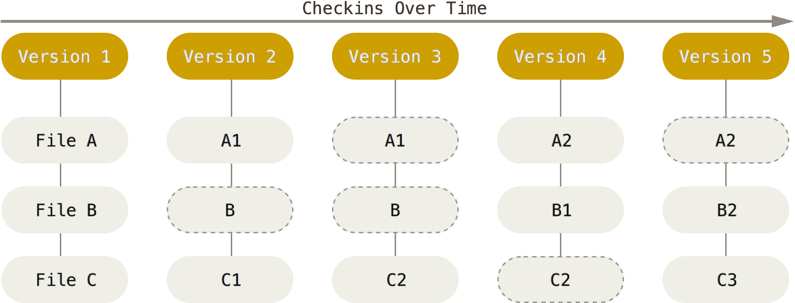

Utilisation et réflexion autour d’un outil de subversion (Git)
Conférence du 14 janvier 2015 @ Supinfo Paris
Votre intervenant
- Etudiant formateur à Supinfo Paris
- Contributeur opensource
- "Tech enthusiast"
Vous avez dit subversion ?
Oui, mais pas Apache Subversion
Ne vous inquiétez pas, nous n'allons rien renverser.
Répondre à une problématique
Vocabulaire commun
Un peu d'histoire
| Date | Nom | Exemple d'adoptant |
|---|---|---|
| 1990 | Concurrent Versions System | OpenBSD |
| 2000 CollabNet & Apache 2010 | Apache Subversion | Apache |
| 2005 | Mercurial | Mozilla |
| 2008 | Bazaar | Canonical |
| 2005 | Git | Linux |
Les méthodes de stockage par différenciel

Git, un système de fichiers ?
B-TRee File System
L'intégrité des versions
- Hash
- CRLF
- Contrôle humain
Ok, ok : Git
- A l'initiative de Linus Torvalds
- Maintenant : Junio Hamano
- Créé un dossier .git, voire des fichiers .git*
Workflow git

Et mon Ctrl + S ?
Questions ?
One more thing

Utilisation de Git
Configuration
$ git config --global user.name "Foo Bar"
$ git config --global user.email foo@bar.comSauvegarde un .gitconfig
Création d'un dépot
$ git init [--bare]Initialized empty Git repository in /.git/
Success!- Créé le .git
Tracker un fichier
$ touch foo.txt
$ git status
# On branch master
#
# Initial commit
#
# Untracked files:
# (use "git add [file]..." to include in what will be committed)
#
# foo.txt
nothing added to commit but untracked files present (use "git add" to track)
Petit rappel
$ git add foo.txt
$ git status
# On branch master
#
# Initial commit
#
# Changes to be committed:
# (use "git rm --cached [file]..." to unstage)
#
#
new file: foo.txtFaire un commit
$ git commit -m "My first commit"
[master (root-commit) [hexKey]] My first commit
1 file changed, 1 insertion(+)
create mode 100644 foo.txt
Success!Suppression
$ git rm foo.txt
rm 'foo.txt'
$ git commit -m "foo a été supprimé"Petit rappel
Voir les récents commits
$ git log
commit [code hexa]
Author: Foo Bar foo@bar.com
Date: Sat Jan 14 19:30:00 2015 -0500
My first commitConfigurer un dépot
$ git remote add origin ~/baredRepository.git
$ git push --set-upstream origin master
Branch master set up to track remote branch master from origin.Petit rappel
Récupération des changements
$ git pull origin master
Updating [code hexa]
Fast-forward
foo.txt | 1 +
1 file changed, 1 insertion(+)
create mode 100644 bar.txtVoir les différences
$ git diff HEAD
diff --git a/foo.txt b/foo.txt
index [Codes hexa]
--- a/foo.txt
+++ b/foo.txt
@@ -1 +1 @@
+I'm Foo !Reset une donnée ajoutée
$ touch bar.txt
$ git add bar.txt
$ git reset bar.txt
$ git checkout -- bar.txtLe stash !
Un espace "en dehors" de tout ça
$ git stash
$ git stash applyAgrandissons l'arbre
$ git branch MaBranche
$ git checkout MaBranche
($ git checkout -b MaBranche)
Switched to branch 'clean_up'Petit rappel
Elaguons un peu
$ git checkout master
$ git merge MaBranche
Updating [code hexa]
Fast-forward
[Résumé]
$ git branch -d MaBranche
$ git pushPetit rappel
Questions ?
La gestion de projet avec un outil de subversion
Bien choisir son fournisseur de service
- Gitolite
- Github
- Bitbucket
Lier son dépot avec un outil de gestion de projet
- Redmine
- Github
- Atlassian
Outil de contrôle : Statistiques
Utilité du contrôle statistique
- Un point semble-t-il bloquant ?
- Le projet avance-t-il ?
- Cibler les codes facilement et difficilement maintenables
Sans GUI
- Commits par auteur
git shortlog -sn --no-merges - GitStats
Lier tâches et commits
- fixes #ID
- refs #ID
Les hooks
Effectuer une action à un moment du workflow
- pre-receive
- post-receive
- update
- ...
[Déploiement, Intégration, Livraison] continue
Visualiser les branches
Revue de code
Tags & releases
git tag -a v0.5.4 -m 'Ma version'Reconnu par des outils de gestion de dépendances
Possibilité de signer une étiquette
Questions ?
Fin
Merci à tous